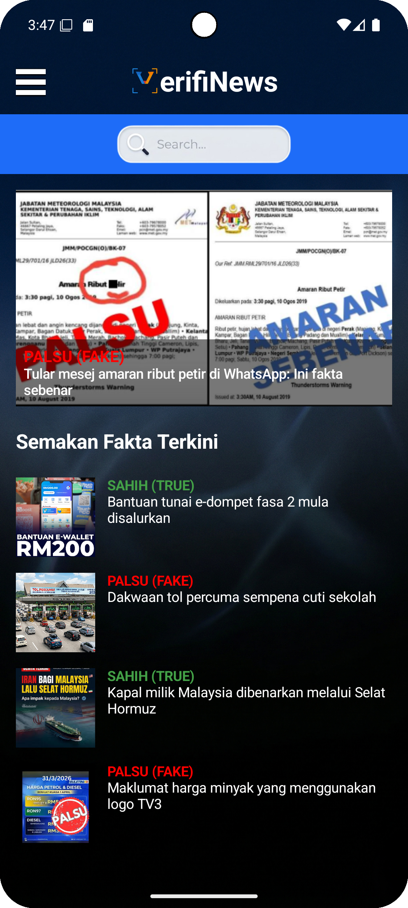
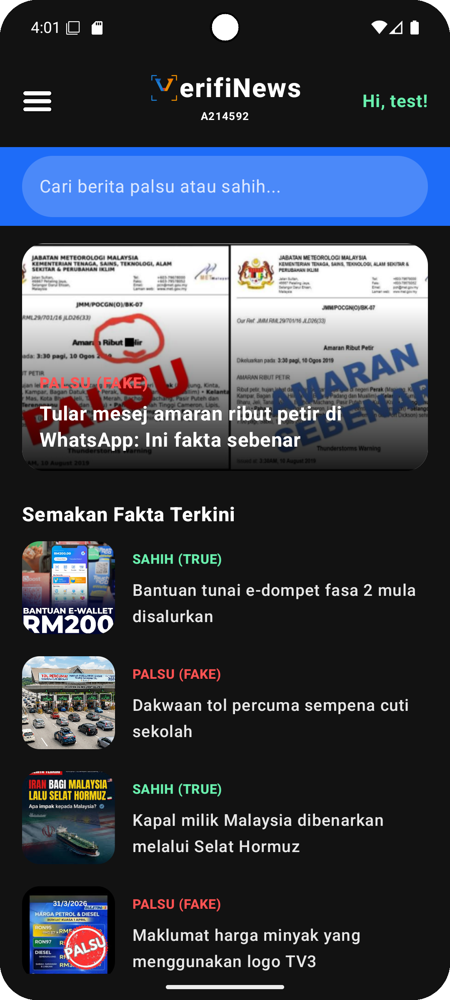
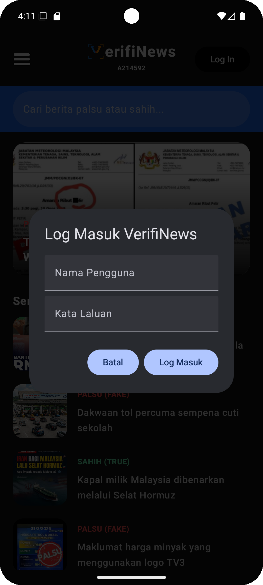
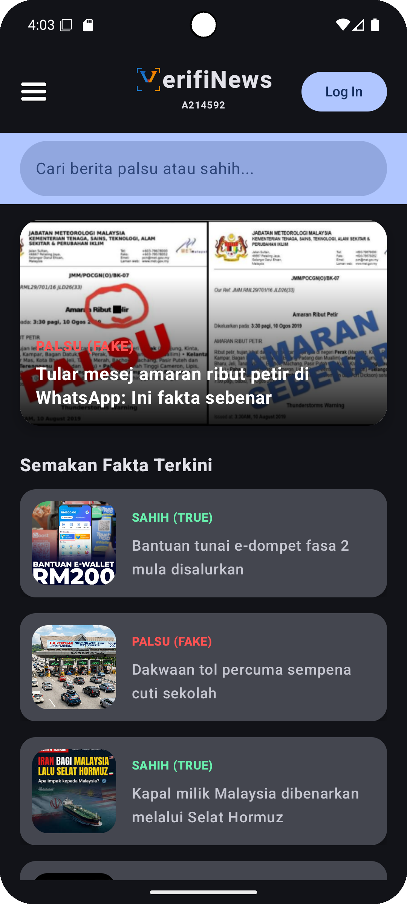
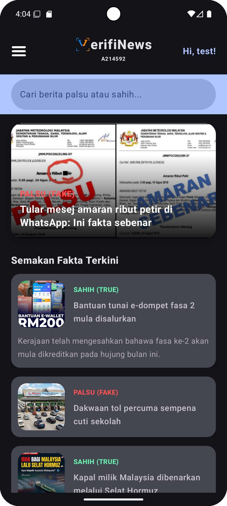
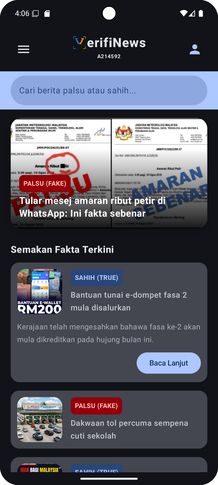
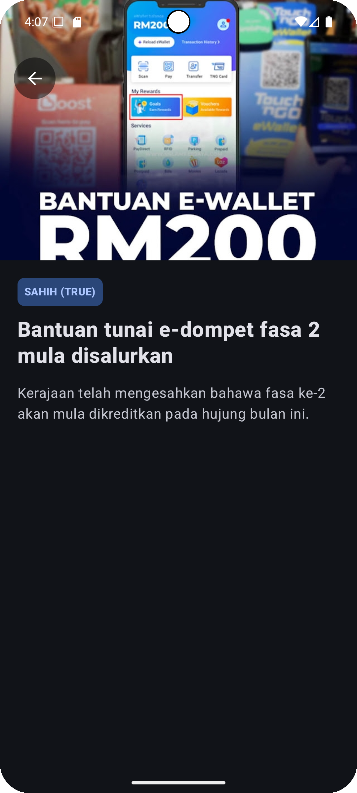
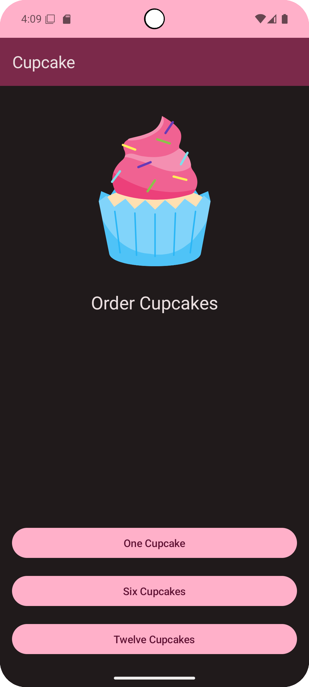
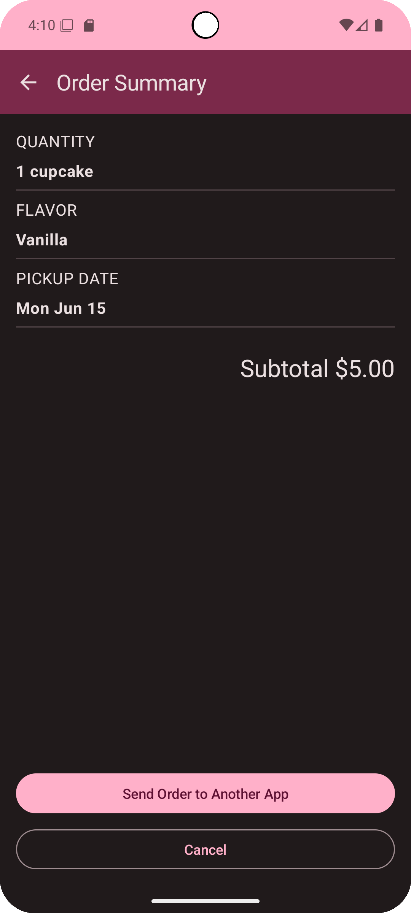

Mohamad Khairi Hafizi Bin Mohd Nazri
Bachelor of Software Engineering | A214592
Instructor: Mr Nelson Sana
Hello, I am Mohamad Khairi Hafizi, a passionate Software Engineering student eager to build impactful mobile applications. This portfolio showcases my journey in mastering Android development using Kotlin and Jetpack Compose, transforming basic coding exercises into a fully functional, real-world application.
Laboratory Exercises

Lab 1 (UI)
In this lab, I learned the fundamentals of Jetpack Compose by building static UI layouts. It was fascinating to transition from traditional XML to a declarative UI approach using basic components like Columns, Rows, and Modifiers.


Lab 2 (Interaction)
This lab introduced me to state management in Compose using remember and mutableStateOf. I learned how to make the app interactive, allowing it to respond to user button clicks and dynamic text inputs seamlessly.


Lab 3 (Material Design)
I explored Material Design 3 principles, applying custom themes, colors, and typography. It taught me the importance of a consistent and aesthetically pleasing user experience through standard components like Scaffold and Cards.


Lab 4 (Navigation)
Navigation in Compose was the major focus here. I successfully implemented NavHost and NavController to seamlessly transition between multiple screens, which became the essential backbone of my future multi-screen projects.


Lab 5 (Room)
I dove into local data persistence using the Room Database library. Creating DAOs, Entities, and managing asynchronous SQL database operations with Kotlin Coroutines gave me a solid understanding of offline data storage.
Major Projects
Project 1: VerifNews
Problem Statement: The rapid spread of misinformation on social media causes public panic, and citizens lack a centralized mobile platform to quickly verify the truth of viral claims.
Lessons Learned: I learned how to integrate Navigation and shared ViewModels to manage data across a 5-screen application. It also challenged me to design an intuitive UI that clearly displays 'Sahih' and 'Palsu' news statuses using custom badges.
Project 2: VerifiNews (Advanced)
Problem Statement: Citizens lack a reliable platform to not only verify viral claims but also actively report suspicious news with photo evidence directly to a community moderation queue.
Lessons Learned: This project pushed my technical boundaries by integrating Firebase Firestore for cloud syncing and Retrofit for fetching live data from NewsAPI. Handling the device's Camera sensor and managing hybrid data streams (combining local, cloud, and API data) taught me the realities of complex app architecture.
Reflection & Learning Journey
My journey from Lab 1 to Project 2 has been incredibly rewarding. I evolved from struggling with basic UI layouts to confidently architecting a full-fledged, cloud-connected mobile app. Tackling a real-world issue like fake news (SDG 16) through technology showed me the profound impact software engineering can have on society. Overcoming bugs related to database migrations and asynchronous API calls significantly sharpened my problem-solving skills.
Skills & Tech Stack
Resources & Acknowledgements
Core Resources: NewsAPI (newsapi.org), Google Fonts, Material Design Icons, Firebase Documentation, Android Developers Guide.
Acknowledgement: AI assistance (Gemini) was utilized for troubleshooting complex database migration bugs, optimizing Jetpack Compose UI layouts, and brainstorming hybrid data architecture solutions.